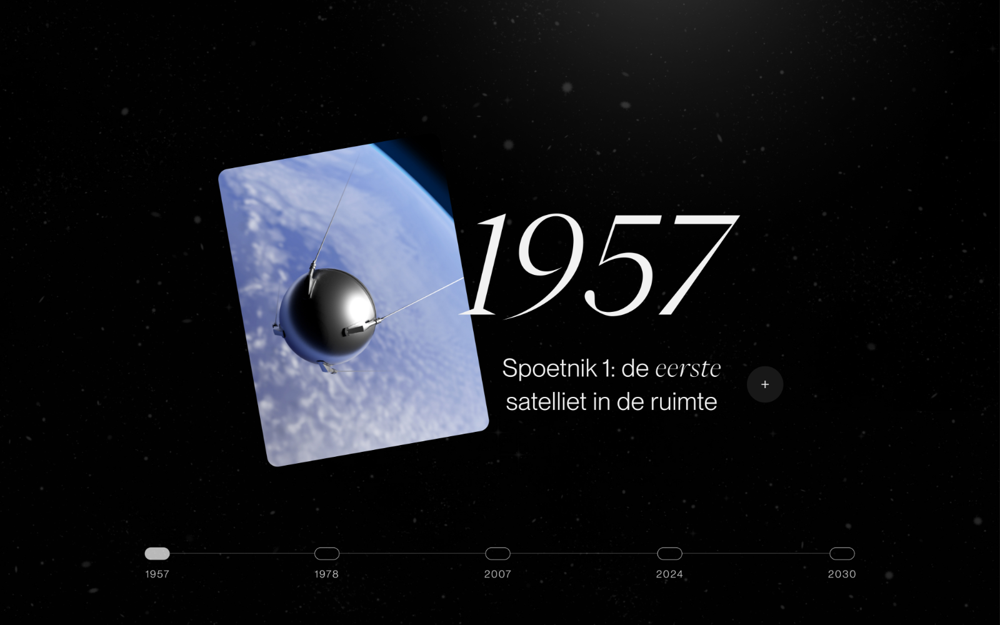
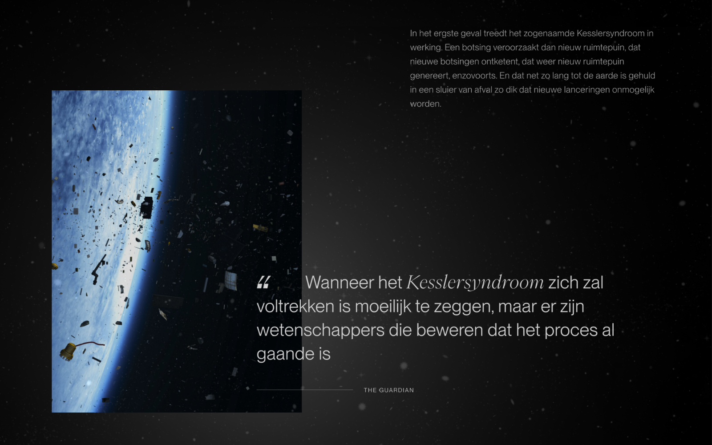
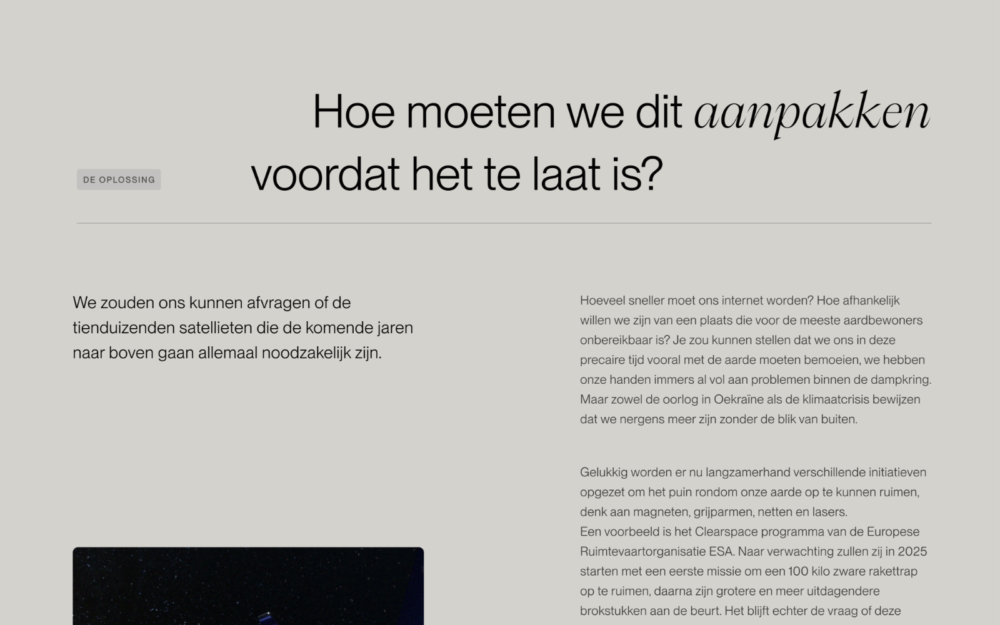
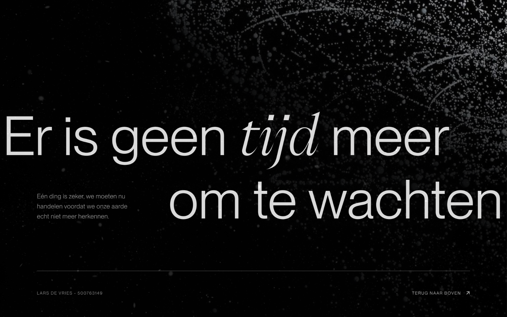

Een hemel vol ruimtepuin
Satellieten spelen een cruciale rol in ons dagelijks leven, van communicatie en observatie tot navigatie en weersvoorspellingen. Echter verhoogt het toenemende aantal satellieten het risico op conflicten en het ontstaan van ruimteafval. Hoe moeten we dit oplossen?

De opdracht
De opdracht was om een visuele interface te ontwerpen voor een zelf gekozen casus. Ik heb uiteindelijk de keuze gemaakt om een interface te ontwerpen over een artikel van De Correspondent dat gaat over ruimteafval. Ik heb specifiek voor dit artikel gekozen omdat ik wel eens gehoord had dat er een hoop ruimtepuin om onze aarde heen zweeft, echter wist ik niet hoe groot de ernst van dit probleem was. Als we niks veranderen zal er zoveel puin rondom onze aarde ontstaan dat nieuwe lanceringen onmogelijk worden. Als dit het geval is kunnen we geen nieuwe satellieten meer inzetten voor belangrijke zaken als internet, gps etc. Dit zal dus een grote impact hebben op het leven van ieder persoon. Binnen de interface wilde ik gebruikers daarom informeren over het onderwerp maar tevens ook waarschuwen over deze mogelijke gevolgen.
Het resultaat
Na verschillende iteraties is er binnen het project uiteindelijk een Hi-Fi prototype opgeleverd. Dit prototype heb ik gemaakt in Figma, voor mij was dit de eerste keer dat ik gebruik maakte van deze tool. Bovenaan de pagina is gekozen voor een titel met 'Onze aarde, herken jij ‘m nog?', daarmee wordt gedoeld op het beeld dat erachter is geplaatst. Hier zie je al het puin en satellieten die rondom de aarde zweven, waardoor je onze planeet eigenlijk niet meer herkent. Hiermee wordt het probleem ingeleid en gebruikers nieuwsgierig gemaakt naar de rest van de pagina. Wanneer naar beneden wordt gescrollt is te zien dat verschillende elementen sticky zijn gemaakt waardoor het effect ontstaat dat elementen over elkaar heen 'zweven', net zoals in de ruimte gebeurd. Verder is de gehele pagina opgedeeld in vier duidelijke koppen die het probleem, de oorzaak, de gevolgen en de oplossingen beschrijven. Er wordt afgesloten met een duidelijke boodschap waarmee de urgentie van het probleem nogmaals wordt aangekaart.
Bekijk het prototype    